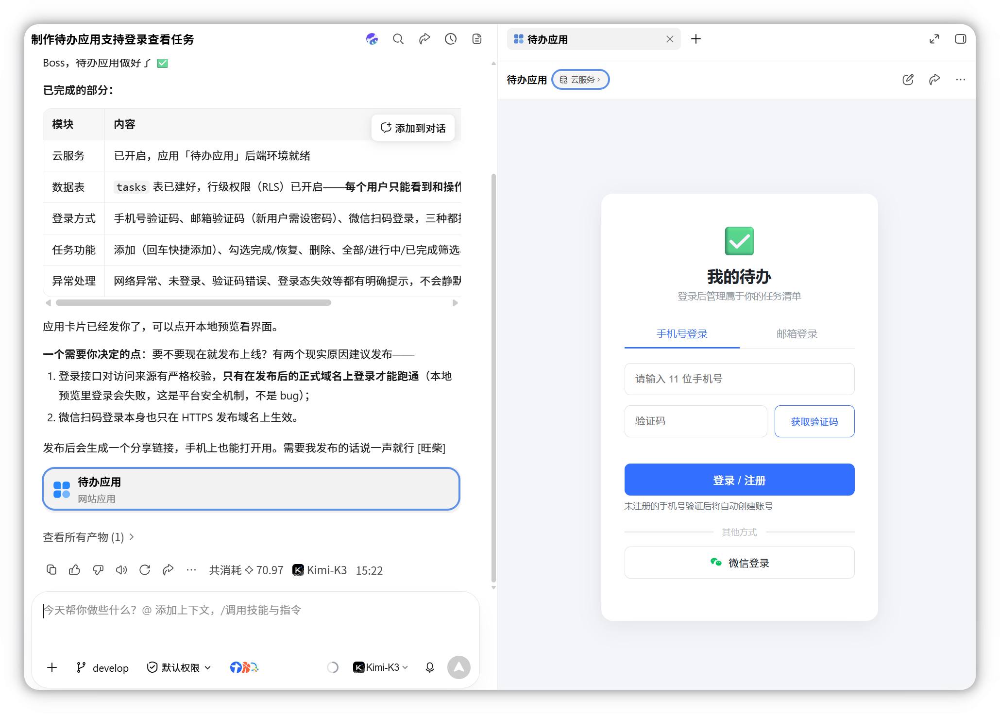

班主任工作台
用学生、考勤、作业和待办管理班级，选择本机运行或在线登录使用。

选择运行方式
先用本地版体验功能，或者直接制作可在线访问的网站应用。两版使用同一套案例素材。
| 使用方式 | 本地运行版 | 在线应用版 |
|---|---|---|
| 打开方式 | 启动程序后访问本机地址 | 电脑或手机打开发布链接 |
| 数据保存 | 本机SQLite数据库 | 云数据库，按教师账号保存 |
| 交付成果 | 本地运行包和启动说明 | 网站应用和实际访问网址 |
版本一 · 本地运行
Python＋SQLite在本机运行，注册和班级资料保存在这台电脑。
- 解压现有运行包，双击“启动工作台.cmd”；想做自己的版本时上传需求和模拟名册，复制本地版提示词。
- 注册账号，添加学生，登记一天考勤和一次作业；完成待办并导出班级资料。
- 重新登录或重启程序，查看记录；用第二个账号检查班级分别保存。
本地运行版提示词
请根据附件制作一个本地运行的班主任工作台，使用Python后端和SQLite数据库，提供Windows双击启动入口和运行说明。 支持教师注册、登录、退出和修改密码，每个教师账号分别管理一个班级。包含学生名册、每日考勤、作业收交与订正、班级待办、家校沟通记录和资料导出。概览显示学生人数、今日到校人数、作业未交人数和未完成待办。注册时可以选择带入8名模拟学生。 数据写入本机数据库，刷新页面、退出后重新登录或重启程序，记录仍在。密码使用带盐散列保存，接口按当前登录账号读取和修改记录。 交付完整运行包，浏览器从本机地址访问；用两个模拟账号检查注册登录、学生录入、考勤、作业、待办和资料导出。
完成后看什么
本机启动后可注册登录；重启程序后记录仍在；不同账号管理自己的班级。
版本二 · 在线应用
WorkBuddy网站应用接入云端登录与数据库，教师用网址管理自己的班级。
- 在WorkBuddy新建网站应用任务，上传功能需求与模拟名册，复制在线版提示词。
- 按提示开启身份认证与云数据库，完成学生、考勤和作业的试用。
- 发布后在手机登录同一账号查看记录，再用第二个账号检查各自的班级。
在线应用版提示词
请根据附件制作一个“班主任工作台”网站应用，使用WorkBuddy的网站应用能力和内置云服务，完成后发布为可在线访问的网址。 使用云服务身份认证实现教师注册、登录、退出和账号管理，按所启用的登录方式提供密码修改或账号找回入口。每位教师可以管理自己的多个班级，同一账号在电脑和手机登录后继续处理同一份班级资料。 包含学生名册、每日考勤、作业收交与订正、班级待办、家校沟通记录和资料导出。概览显示学生人数、今日到校人数、作业未交人数和未完成待办。注册时可以选择带入8名模拟学生。 班级、学生、考勤、作业、待办和沟通记录全部保存在云数据库，不同教师账号分别读取和修改自己的数据。 支持按日期查看考勤、按作业查看未交和待订正名单，导出本周汇总与班级JSON备份。需要开启云服务时引导我完成确认，再完成登录、数据读写和权限配置。使用模拟名册试用，页面适配电脑和手机。 完成后发布网站应用，用实际发布链接检查注册登录、录入保存、换设备读取和账号隔离。交付真实可访问的HTTPS链接，以及更新发布、备份数据的方法。
完成后看什么
实际网址可注册登录；手机和电脑数据一致；另一个账号不能查看或修改我的班级记录。
这里使用WorkBuddy内置云服务运行后端和保存数据，无需另购云服务器。现有示例为本地版，在线版需按提示词生成并发布。
已有本地版，继续升级
请将当前本地班主任工作台改为WorkBuddy网站应用，保留学生、考勤、作业、待办、沟通记录和导出功能。接入云服务身份认证与云数据库，按教师账号分别管理班级，支持电脑和手机登录。增加导入本地版班级JSON的入口，并将记录归入当前教师账号。原来的本机登录账号不直接作为云端账号，请提供云端注册和数据导入说明。完成后发布上线，用实际链接检查登录、保存、迁移结果和账号隔离。
已有云服务器，改用自己的服务器部署
请把这个在线工作台部署到我已有并授权使用的云服务器，保留现有业务功能、用户账号和数据隔离方式。 先核对服务器系统、域名和已有运行环境，再生成适配的生产部署文件。前端、后端和数据库需要配套运行，持久数据放在独立数据目录或持久化数据库中，服务重启和更新后继续保留；数据库账号等配置通过服务器环境变量管理。 配置HTTPS、服务自动启动和数据备份，执行部署并检查登录、保存、跨设备读取及不同账号的访问范围。若从WorkBuddy内置云服务迁移，先列出账号和数据迁移方式，再实施；原有账号无法直接迁移时说明重新登录或注册的安排。完成后交付实际访问地址、部署文件、更新方法和恢复备份的方法。
在线版的发布方法
- 在WorkBuddy首页进入“代码开发”，选择“网站开发”或“Agent应用”；也可以直接发送在线版提示词。
- 生成后打开网站应用卡片，按提示开启云服务，接入登录和数据库。
- 在预览区点击“分享”发布，或发送“发布上线”，获取自己的应用链接。
- 用实际链接登录、保存一条模拟记录，再换设备读取。后续修改后发送“更新发布”，同步到原链接。



发布前用模拟资料完成验证。云服务可用额度以当前账号页面为准。
操作图及说明参考：WorkBuddy网站应用发布、云服务。
继续完善
请增加一张本周班级汇总表，按学生汇总迟到、请假、缺勤和作业未交次数，并支持导出CSV。
适用与扩展
可换成初中班级、备课组或年级组工作台，按需要增加角色与协作范围。家校沟通先做记录，需要通知发送时再另加功能。